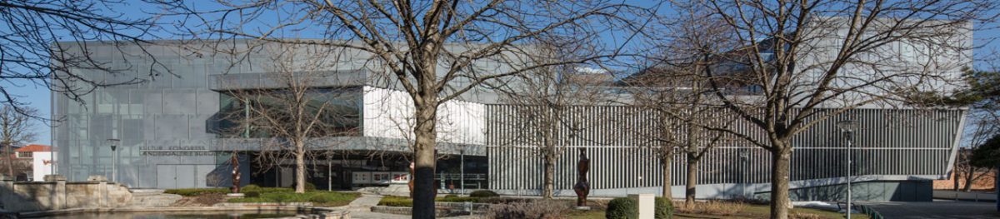

Planung
Planung beschreibt die menschliche Fähigkeit zur gedanklichen Vorwegnahme von Handlungsschritten, die zur Erreichung eines Zieles notwendig scheinen. Dabei entsteht ein Plan, gemeinhin als eine zeitlich geordnete Menge von Daten. Bei der Planung wird berücksichtigt, mit welchen Mitteln das Ziel erreicht werden kann, wie diese Mittel angewendet werden können, um das Ziel überhaupt zu erreichen (Vorgehensmodell), und wie man das Erreichte kontrollieren kann (Steuerung). Als Planungsergebnis erzeugen im Idealfall kurz-, mittel- oder langfristige Pläne Handlungssicherheit.
Ein Plan hat in Bezug auf Management und Organisationen die Bedeutung einer zumindest in schriftliche Form (oder in die einer Zeichnung) gebrachten Vorstellung von den Modalitäten, wie ein erstrebenswertes Ziel erreicht werden kann. Die geistige und handwerkliche Tätigkeit zur Erstellung eines Plans wird Planung genannt. Planung ist die Phase bis zur Genehmigung eines Plans vor Beginn der Realisierung.
Der Zweck von Planung besteht darin, über eine realistische Vorgehensweise zu verfügen, wie ein Ziel auf möglichst direktem Weg erreicht werden kann.